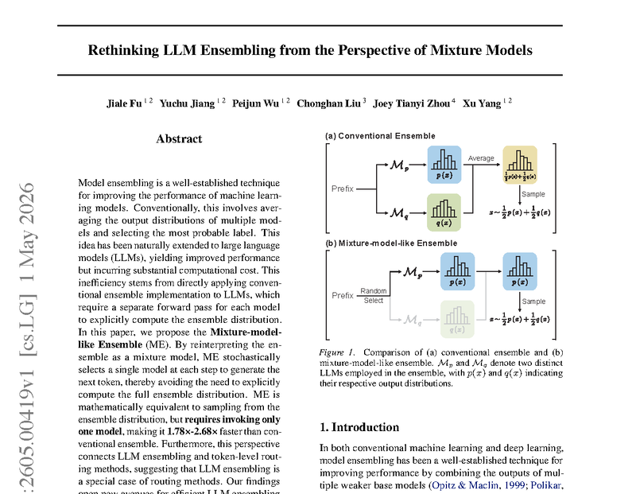
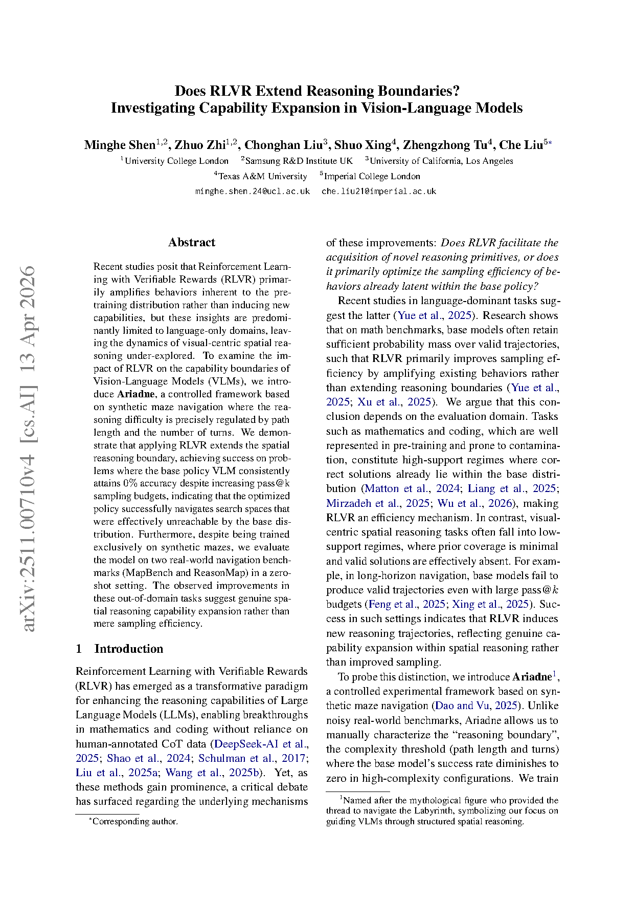
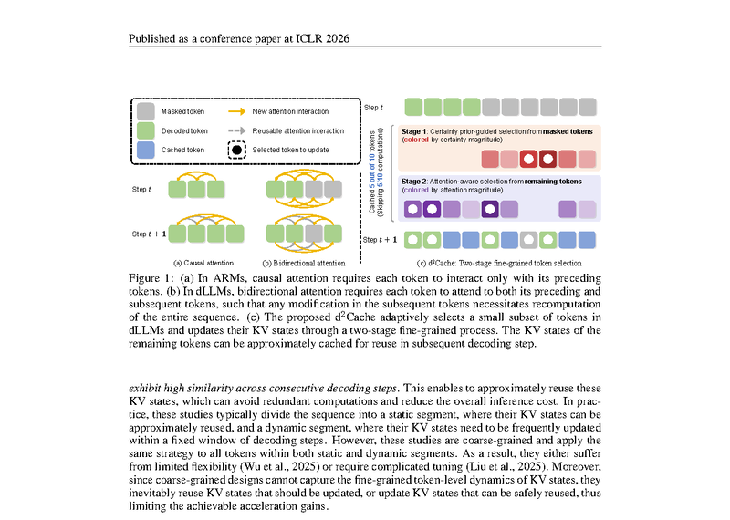
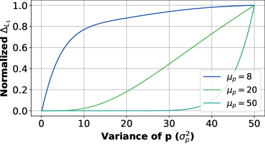
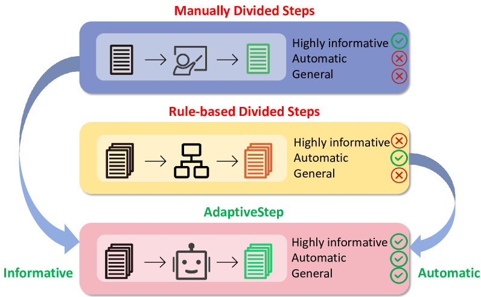
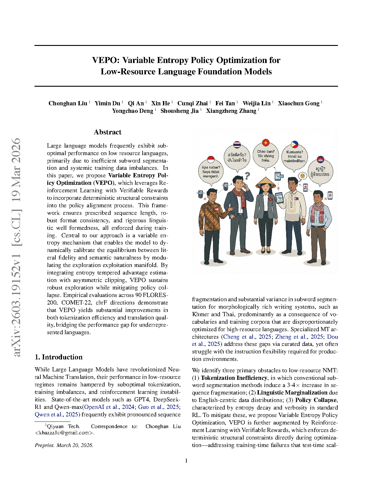
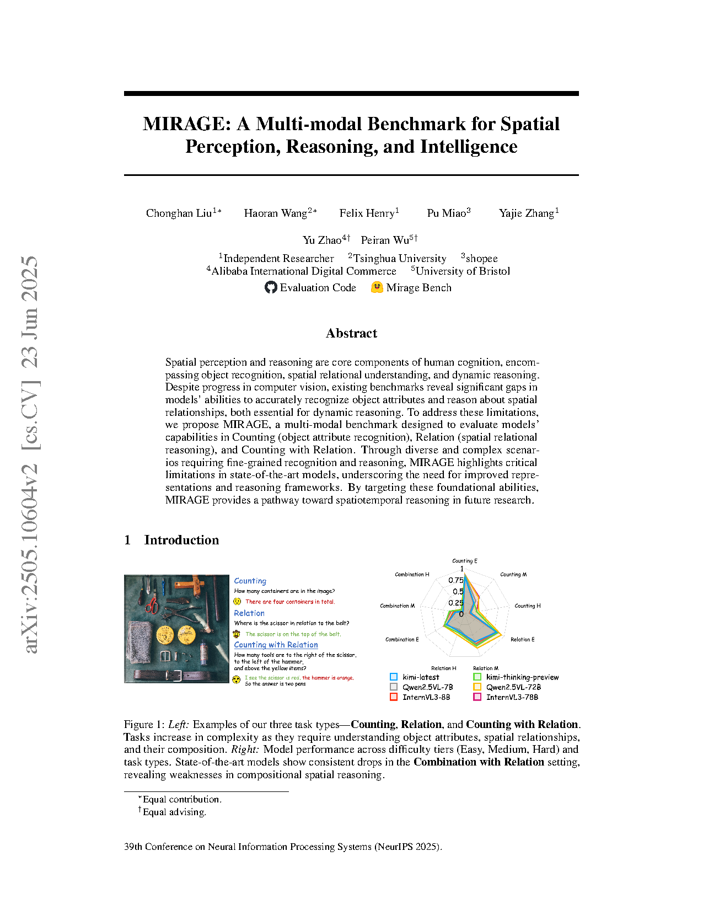

|
Chonghan Liu
I am a LLM Algorithm Engineer. My research interests include LLM Inference Optimization, Reinforcement Learning for LLMs, and Multimodal Large Language Models. I received my B.S. in Computer Science from Nanjing University, and dropped out of the M.S. program at UCLA to work full-time in AI. I am a collaborator on LLaMA-Factory and an active contributor to NVIDIA-NeMo/Automodel. Google Scholar / GitHub / X / Blog / Email |

|
Publications [all Papers →]
 | Rethinking LLM Ensembling from the Perspective of Mixture Models Spotlight ICML 2026 [paper] |
 | Ariadne: A Controllable Framework for Probing and Extending VLM Reasoning Boundaries Poster ACL Main 2026 [paper] |
 | d²Cache: Accelerating Diffusion-Based LLMs via Dual Adaptive Caching Poster ICLR 2026 [paper] [code] |
 | Flatter Tokens are More Valuable for Speculative Draft Model Training Poster ICLR 2026 [paper] |
 | AdaptiveStep: Automatically Dividing Reasoning Step through Model Confidence Poster ICML 2025 [paper] |
 | VEPO: Variable Entropy Policy Optimization for Low-Resource Language Foundation Models arXiv preprint arXiv:2603.19152, 2026 [paper] |
 | Mirage: A Multi-modal Benchmark for Spatial Perception, Reasoning, and Intelligence arXiv preprint arXiv:2505.10604, 2025 [paper] |
Open Source [all PRs →]
NVIDIA-NeMo/Automodel— PyTorch-native LLM/VLM training framework
Speculative decoding (EAGLE / DFlash / DSpark / Domino / JetSpec): grew this from a single Llama EAGLE-1 recipe into Automodel's full draft-model training stack — P-EAGLE parallel drafting, DFlash, DeepSeek V4 DSpark, Domino online training, and JetSpec causal parallel drafting, plus a vLLM/SGLang serving bridge and an end-to-end tutorial
Model & MoE support: added training support for DeepSeek V4 Flash (plus Multi-Token Prediction), Hy3-preview, and Hy-MT2-30B-A3B, plus Rollout Routing Replay (R3) for MoE RL training
Distributed & VLM training: TP+PP and Context Parallelism for Gemma4 VLM, TransformerEngine attention injection into HF models, and fixes for NaN loss, activation checkpointing, multi-image token expansion, and mRoPE under packing
Knowledge distillation: VLM KD recipe with chunked loss and teacher-model offload
Agent / tool-calling SFT: multi-turn dataset adapter, turn-aware history truncation, reasoning-content masking, tool-call accuracy evaluator, and an SFT tutorial
verl-project/verl— RLHF training framework
hiyouga/LLaMA-Factory— Unified efficient fine-tuning framework for 100+ LLMs & VLMs
Maintainer for multimodal (VLM) support; that work later moved to EasyR1
chatchat-space/Langchain-Chatchat— RAG & agent app framework over local LLMs
Built the pluggable model-provider callback/validator architecture and its core provider/model manager, including Xinference integration